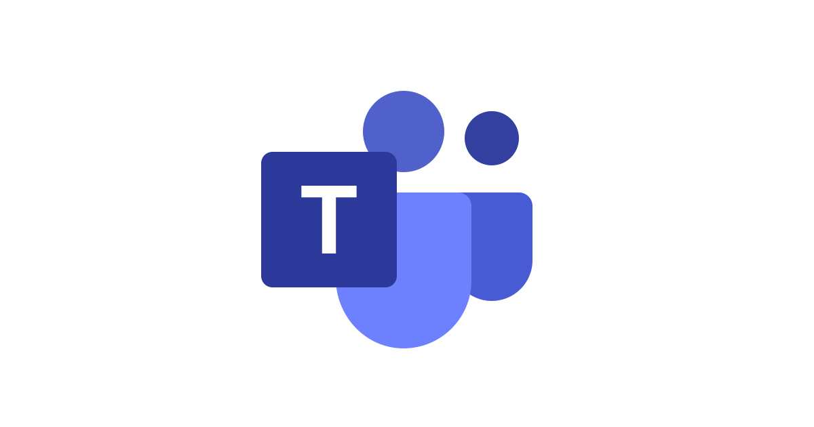
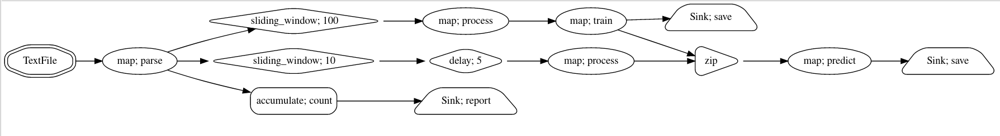
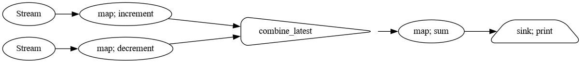
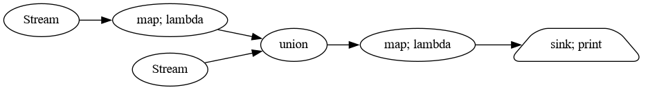
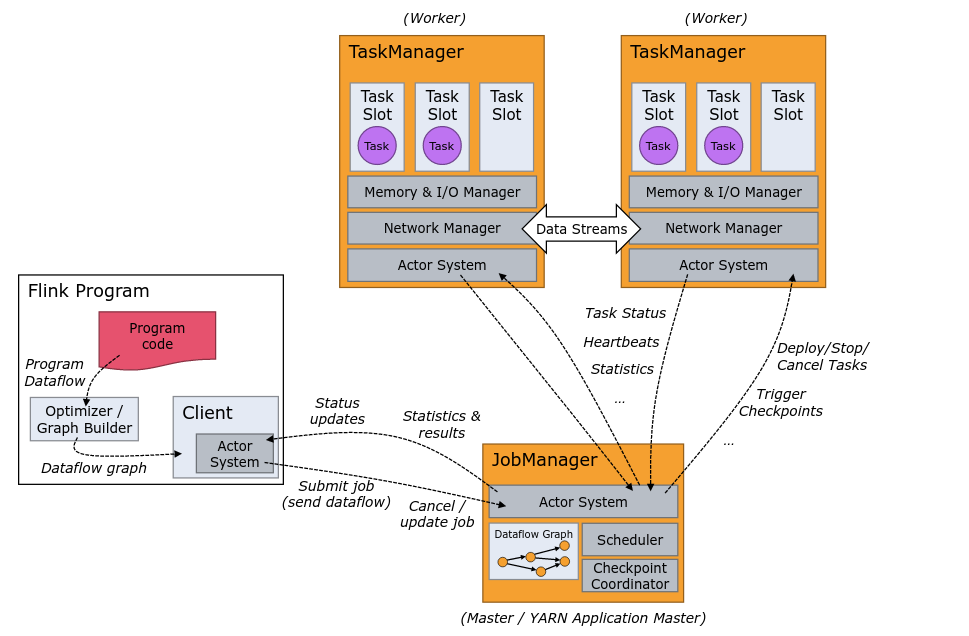

Przetwarzanie równoległe i strumieniowe
Wykład 9
Aplikacje do przetwarzania danych: strumienie w Streamz, architektura Apache Flink




Plan wykładu
dane bez końca, stan pośredni, model pull i push
Stream, emit, map, filter, sink, accumulate, rozgałęzienia
partition, sliding_window, zip, combine_latest, timed_window, back pressure, Dask
JobManager, TaskManager, sloty, wdrożenie, cykl życia zadania, PyFlink
Gdzie jesteśmy?
Wykład 2: potok generatorów (źródło → map → filter → ujście). Dziś ten sam model, ale dane wpychamy do potoku w chwili, gdy nadejdą.
Wykład 7: executory. Streamz potrafi oddać kosztowne kroki do puli procesów (Dask).
Za tydzień: korutyny i async, czyli pętla zdarzeń, na której Streamz realizuje operacje zależne od czasu.
Dane bez końca: stan pośredni
NumPy i Pandas zakładają, że znają wszystkie dane z góry: df.mean() przegląda całą kolumnę. Strumień nie ma końca, więc po każdej nowej porcji danych aktualizujemy wynik przyrostowo, pamiętając tylko stan pośredni.
def srednie(paczki): # strumień list pomiarów
total = count = 0 # stan pośredni: dwie liczby
for paczka in paczki:
total += sum(paczka)
count += len(paczka)
yield total / count
for m in srednie([[10, 20], [30], [40, 50, 60]]):
print(m)
15.0 20.0 35.0
NumPy i Pandas nadal się przydają: wewnątrz kroku potoku, na pojedynczej paczce danych (np. sum(paczka) → paczka.sum()).
Której statystyki nie da się dokładnie liczyć przyrostowo ze stanem o stałym rozmiarze?
Mediana wymaga pamiętania wszystkich elementów. W strumieniach liczy się ją w oknie albo w przybliżeniu (np. t-digest). Wariancję da się liczyć dokładnie: algorytm Welforda pamięta tylko (n, średnia, M2).
Streamz
- Biblioteka do budowania potoków dla ciągłych strumieni danych: od prostych łańcuchów po grafy z rozgałęzieniami, łączeniem, kontrolą przepływu i sprzężeniem zwrotnym.
- Autor: Matthew Rocklin (twórca Dask), 2017. Kod: github.com/python-streamz/streamz, dokumentacja: streamz.readthedocs.io.
- Stan w 2026: wersja 0.6.6 (kwiecień 2026), Python ≥ 3.10. Po przerwie w latach 2022-2025 projekt utrzymuje niewielka grupa osób: poprawki i drobne nowości (np.
map_async), bez dużego rozwoju. - Instalacja:
pip install streamz. Zależności: tornado, toolz. Opcjonalnie: dask (równoległość), pandas (streamz.dataframe), confluent-kafka, graphviz (wizualizacja).

Zastosowania
- logi serwerów WWW,
- telemetria, instrumenty naukowe, potoki przetwarzania obrazu,
- finansowe szeregi czasowe,
- uczenie maszynowe online (model uczy się na bieżąco).
Potok liniowy a graf przetwarzania

Potok liniowy: wystarczy pętla for albo potok generatorów z wykładu 2.

Graf: trzy gałęzie z jednego źródła, okna, opóźnienie, złączenie zip i model uczony na bieżąco. Ręczna pętla staje się tu nieczytelna, a Streamz opisuje graf deklaratywnie. Źródło: streamz.readthedocs.io
Do ilu gałęzi trafia każdy element wychodzący z map; parse?
Węzeł przekazuje każdy element wszystkim węzłom podłączonym za nim. Podział pracy między wykonawców to osobna operacja (np. scatter w Dask albo keyBy we Flinku).
Kiedy zip przekaże krotkę do map; predict?
zip czeka na element z każdego wejścia. Gałąź z delay spowalnia więc cały dalszy potok.
Pull czy push? Generator a Streamz
Generator (wykład 2): pull
def podwoj(xs):
for x in xs:
yield x * 2
for y in podwoj(range(3)): # pull: konsument ciągnie
print(y)
0 2 4
Streamz: push
from streamz import Stream
s = Stream()
s.map(lambda x: x * 2).sink(print)
for x in range(3):
s.emit(x) # push: producent pcha
0 2 4
- Pull: konsument wywołuje
next(), a źródło czeka, aż ktoś poprosi. Naturalne, gdy dane już są (plik, lista). - Push: źródło wywołuje
emit(), gdy dane nadejdą (czujnik, sieć, Kafka), a potok reaguje na zdarzenie. Tak działają też Flink i Kafka Streams.
Odczyty z czujnika przychodzą przez sieć w nieprzewidywalnych chwilach. Który model jest naturalny?
Push: to nadejście danych wyzwala obliczenia. W modelu pull konsument musiałby co chwilę pytać (polling).
Pierwszy strumień: Stream, emit, sink
from streamz import Stream
source = Stream()
source.sink(print)
source.emit(1)
source.emit(2)
source.emit(10)
1 2 10
from streamz import Stream
def increment(x):
return x + 1
source = Stream()
source.map(increment).sink(print)
source.emit(1)
source.emit(2)
source.emit(10)
2 3 11
Stream()tworzy źródło. Każda metoda (map,sink, …) tworzy nowy węzeł podłączony do poprzedniego i go zwraca: wywołania łączymy w łańcuch.emit(x)wpycha element do grafu i wraca, gdy przejdzie on przez cały graf (synchronicznie).sink(f)to ujście: wywołujefdla każdego elementu (np.print, zapis do pliku).
map, filter i rozgałęzienia
from streamz import Stream
source = Stream()
(source.filter(str.islower) # tylko małe litery
.map(str.upper)
.sink(print))
for ch in "aBcD":
source.emit(ch)
A C
Metody można przekazywać jak zwykłe funkcje: str.islower("a") to to samo, co "a".islower().
from streamz import Stream
source = Stream()
a = source.map(lambda x: x + 1)
b = source.map(lambda x: x - 1)
a.sink(lambda x: print("gałąź A:", x))
b.sink(lambda x: print("gałąź B:", x))
source.emit(1)
source.emit(2)
gałąź A: 2 gałąź B: 0 gałąź A: 3 gałąź B: 1
Węzeł przekazuje element wszystkim węzłom podłączonym za nim, w kolejności podłączenia. Element przechodzi najpierw całą gałąź A, potem całą gałąź B (w głąb), i dopiero wtedy emit() wraca.
Symulacja: element płynie przez graf
from statistics import fmean
from streamz import Stream
source = Stream()
(source.sliding_window(3, return_partial=False)
.map(fmean)
.filter(lambda m: m > 30)
.sink(lambda m: print("ALARM", round(m, 1))))
source.accumulate(max).sink(lambda t: print("rekord", t))
for t in [28, 31, 35]: # albo przyciski powyżej
source.emit(t)
accumulate: stan w potoku
map, filter, sink są bezstanowe. accumulate(func, start) pamięta stan: stan = func(stan, x) i emituje nowy stan.
from streamz import Stream
def add(acc, x):
return acc + x
source = Stream()
# bez start: pierwszy element staje się stanem
source.accumulate(add).sink(print)
# druga gałąź z tego samego źródła, stan od 100
source.accumulate(add, start=100).sink(print)
for x in [1, 2, 3, 4]:
source.emit(x)
1 101 3 103 6 106 10 110
Co wypiszą dwa ostatnie print?
source = Stream() maks = source.accumulate(max).sink_to_list() licz = source.accumulate(lambda n, _: n + 1, start=0) ile = licz.sink_to_list() for x in [3, 1, 4, 1, 5]: source.emit(x) print(maks) # print(ile) #
max(acc, x) daje maksimum bieżące (running max). Licznik ignoruje sam element (_). To itertools.accumulate z wykładu 2, tylko w wersji push.
accumulate z returns_state=True
Czasem stan to coś innego niż wynik. Z returns_state=True funkcja zwraca parę (nowy_stan, wynik_do_wyemitowania).
from streamz import Stream
def num_distinct(state, new):
state.add(new)
return state, len(state) # (stan, wynik)
source = Stream()
(source.accumulate(num_distinct,
returns_state=True, start=set())
.sink(print))
for animal in ["cat", "dog", "cat", "mouse"]:
source.emit(animal)
1 2 2 3
from streamz import Stream
def update(state, x):
total, count = state
total, count = total + x, count + 1
return (total, count), total / count
source = Stream()
means = source.accumulate(update, returns_state=True,
start=(0, 0))
L = means.sink_to_list()
for x in [10, 20, 30, 40]:
source.emit(x)
print(L)
[10.0, 15.0, 20.0, 25.0]
Prawa strona to średnia przyrostowa ze slajdu 3 w wersji Streamz. sink_to_list() zbiera wyniki do listy: wygodne w testach i w Jupyterze.
Zbiór w num_distinct rośnie bez końca. W strumieniu nieskończonym stan trzeba ograniczać (okno, maxsize).
Kontrola przepływu (flow control)
| Operacja | Co robi | Przykład: wejście → wyjście |
|---|---|---|
flatten() | rozpakowuje listy (iterable) na pojedyncze elementy | [1, 2], [3] → 1, 2, 3 |
partition(n) | rozłączne krotki po n elementów (okno „skaczące”); z timeout=t niepełna paczka wychodzi po t s, z key=f osobne paczki dla każdego klucza | 1 … 5, n = 2 → (1, 2), (3, 4), a 5 czeka |
sliding_window(n) | nakładające się okna n ostatnich elementów; domyślnie także niepełne okna na początku (return_partial=True) | 1, 2, 3, n = 2 → (1,), (1, 2), (2, 3) |
unique(maxsize=None) | odrzuca powtórzenia; maxsize ogranicza pamiętaną historię | 1, 1, 2, 1, maxsize = 1 → 1, 2, 1 |
pluck(k) | wybiera pole x[k] | {"t": 21} → 21 |
collect() | gromadzi elementy aż do wywołania flush() | 1, 2, flush → (1, 2) |
buffer(n) | kolejka o pojemności n między szybkim i wolnym fragmentem potoku (back pressure, dalej w wykładzie) | bez zmiany elementów |
union(*s) | scala kilka strumieni w jeden: każdy element przechodzi dalej od razu | dalej w wykładzie |
Wszystkie przykłady sprawdzone w Streamz 0.6.6. Pełna lista operacji: streamz.readthedocs.io → API.
Okna: partition a sliding_window
from streamz import Stream
source = Stream()
source.partition(3).sink(
lambda w: print("partition ", w))
source.sliding_window(3, return_partial=False).sink(
lambda w: print("sliding_window", w))
for i in range(1, 7):
source.emit(i)
partition (1, 2, 3) sliding_window (1, 2, 3) sliding_window (2, 3, 4) sliding_window (3, 4, 5) partition (4, 5, 6) sliding_window (4, 5, 6)
Okno skaczące (tumbling): każdy element trafia do jednego okna. Okno przesuwne (sliding): element należy do n okien.
Okno przesuwne w praktyce: alarm
from statistics import fmean
from streamz import Stream
odczyty = Stream()
(odczyty.sliding_window(3, return_partial=False)
.map(lambda okno: (okno, round(fmean(okno), 1)))
.filter(lambda para: para[1] > 30)
.sink(lambda para: print("ALARM", *para)))
for t in [28, 29, 31, 32, 33, 30, 27, 26]:
odczyty.emit(t)
ALARM (29, 31, 32) 30.7 ALARM (31, 32, 33) 32.0 ALARM (32, 33, 30) 31.7
Alarm powyżej 30 °C to czujnik z wykładów 1 i 2. Średnia z okna wygładza szum: pojedynczy skok temperatury nie wywoła alarmu.
Ile krotek wyemituje sliding_window(3, return_partial=False) dla 8 odczytów?
Pierwsza pełna krotka po 3. elemencie, potem po każdym kolejnym: 8 − 3 + 1 = 6.
A ile przy domyślnym return_partial=True?
Po jednej krotce na każdy element: (28,), (28, 29), a potem już pełne okna. Na niepełnym oknie średnia może dać fałszywy alarm!
A partition(3) dla tych 8 odczytów?
Dwie pełne paczki; ostatnie dwa odczyty czekają na trzeci (chyba że ustawimy timeout).
Łączenie strumieni (joining)
from streamz import Stream
temp, wilg = Stream(), Stream()
temp.zip(wilg).sink(lambda t: print("zip ", t))
temp.combine_latest(wilg).sink(lambda t: print("combine_latest", t))
temp.emit(21)
temp.emit(22)
wilg.emit(40)
wilg.emit(45)
temp.emit(23)
zip (21, 40) combine_latest (22, 40) zip (22, 45) combine_latest (22, 45) combine_latest (23, 45)
| Operacja | Kiedy emituje |
|---|---|
a.union(b) | każdy element z dowolnego wejścia, bez łączenia w krotki |
a.zip(b) | gdy każde wejście dostarczy nowy element; czekające elementy są buforowane (para „pierwszy z pierwszym”) |
a.combine_latest(b) | przy każdym nowym elemencie, z ostatnimi wartościami pozostałych wejść (gdy już wszystkie coś wysłały) |
a.zip_latest(b) | przy każdym elemencie z a (wejście „bezstratne”, buforowane), z ostatnią wartością b |
Symulacja: zip, combine_latest, zip_latest
temp.zip(wilg)
temp.combine_latest(wilg)
temp.zip_latest(wilg)
Spróbuj: kilka razy temp, potem raz wilg. Który operator zgubi pomiary, a który je zbuforuje? Co się stanie z buforem zip, gdy wilgotność przestanie przychodzić?
Wizualizacja grafu: visualize()
from streamz import Stream
def increment(x):
return x + 1
def decrement(x):
return x - 1
a, b = Stream(), Stream()
wynik = (a.map(increment)
.combine_latest(b.map(decrement))
.map(sum)
.sink(print))
a.emit(10) # brak wartości z b: nic
b.emit(20) # 11 + 19
a.emit(30) # 31 + 19
b.emit(30) # 31 + 29
wynik.visualize("graf.png", rankdir="LR")
30 50 60

from streamz import Stream
s1, s2 = Stream(), Stream()
(s1.map(lambda x: x - 1)
.union(s2)
.map(lambda x: x * 10)
.sink(print))
s1.emit(1)
s2.emit(1)
s1.emit(5)
s1.visualize("union.png", rankdir="LR")
0 10 40

visualize() wymaga pakietów graphviz i networkx oraz programu Graphviz (dot). W Jupyterze wystarczy wynik.visualize(): graf pojawi się w komórce.
Okna czasowe: timed_window
import time
from streamz import Stream
source = Stream()
(source.timed_window(1.0) # lista elementów z 1 s
.filter(len) # pomiń puste okna
.sink(print))
for i in range(10):
source.emit(i)
time.sleep(0.25)
time.sleep(1.5)
[0, 1, 2, 3] [4, 5, 6, 7] [8, 9]
Granice okien wyznacza zegar, więc na obciążonej maszynie podział może wyjść inaczej, np. [0, 1, 2], [3, 4, 5, 6], …
timed_window(t)cotsekund emituje listę elementów zebranych w tym czasie (także pustą, stądfilter(len)). To okno skaczące, ale wyznaczane przez czas, a nie liczbę elementów.- Operacje czasowe działają na pętli zdarzeń (Tornado/asyncio), którą Streamz sam uruchamia w wątku w tle. W programie asynchronicznym:
Stream(asynchronous=True)iawait source.emit(x)(korutyny: za tydzień). - To czas przetwarzania (processing time), czyli zegar maszyny w chwili przetwarzania, a nie czas zdarzenia (event time) zapisany w danych. Odczyt spóźniony o 2 s trafi do złego okna. Czas zdarzeń i watermarki: Apache Flink.
Tempo przepływu: rate_limit i delay
import time
from streamz import Stream
start = time.perf_counter()
def log(x):
print(f"{time.perf_counter() - start:4.1f} s {x}")
source = Stream(asynchronous=False)
source.rate_limit(0.5).sink(log) # max 1 element / 0,5 s
for i in range(4):
source.emit(i) # czeka, gdy potok "zatkany"
log("koniec pętli")
0.0 s 0 0.5 s 1 1.0 s 2 1.5 s 3 1.5 s koniec pętli
import time
from streamz import Stream
start = time.perf_counter()
def log(x):
print(f"{time.perf_counter() - start:4.1f} s {x}")
source = Stream()
source.delay(1.0).sink(log) # kolejka, 1 element / 1 s
for i in range(3):
source.emit(i) # wraca od razu
log("koniec pętli")
time.sleep(2.5)
0.0 s 0 0.0 s koniec pętli 1.0 s 1 2.0 s 2
rate_limit(t) zatrzymuje emit() u producenta, aż minie t: to back pressure. Pętla kończy się po 1,5 s.
delay(t) wkłada elementy do kolejki bez limitu i wypuszcza je co t s (pierwszy od razu). emit() wraca natychmiast, więc kolejka może rosnąć bez końca.
Back pressure (przeciwciśnienie)
Gdy producent jest szybszy niż konsument, dane muszą gdzieś czekać. buffer(n) to kolejka o pojemności n: gdy jest pełna, emit() czeka, jak queue.Queue(maxsize=n) w problemie producent-konsument (wykład 3).
Źródła i ujścia danych
Źródła (Stream.from_…) | Ujścia |
|---|---|
from_iterable, from_textfile (jak tail -f), filenames (nowe pliki w katalogu), from_periodic (funkcja wywoływana co t s) | sink(f), sink_to_list(), sink_to_textfile(path) |
from_tcp, from_http_server, from_websocket, from_process (wyjście programu) | to_websocket |
from_kafka, from_kafka_batched (confluent-kafka), from_mqtt | to_kafka, to_mqtt |
Źródła działają w pętli zdarzeń i trzeba je uruchomić: source.start() (albo Stream.from_…(…, start=True)).
import time
from streamz import Stream
source = Stream.from_iterable(range(10))
wynik = (source.filter(lambda x: x % 2 == 0)
.map(lambda x: x * x)
.sink_to_list())
source.start() # pompuje dane w pętli zdarzeń
time.sleep(0.5) # dajmy mu chwilę
print(wynik)
[0, 4, 16, 36, 64]
Kafka, MQTT i serwery danych to temat wykładu 8 (dane sensoryczne, brokery) i 12 (Kafka).
Równolegle: Streamz i Dask
import time
from dask.distributed import Client
from streamz import Stream
def slow_square(x): # czysta funkcja: można ją wysłać
time.sleep(1)
return x * x
if __name__ == "__main__":
client = Client(n_workers=4, threads_per_worker=1)
source = Stream(asynchronous=False)
wyniki = (source.scatter() # element do klastra
.map(slow_square) # na workerach
.buffer(8) # do 8 zadań w locie
.gather() # wyniki z powrotem
.sink_to_list())
start = time.perf_counter()
for x in range(8):
source.emit(x)
while len(wyniki) < 8:
time.sleep(0.05)
print(wyniki, f"{time.perf_counter() - start:.1f} s")
client.close()
[0, 1, 4, 9, 16, 25, 36, 49] 2.1 s
- 8 zadań po 1 s na 4 procesach: ok. 2 s zamiast 8 s (czas zależy od maszyny). Kolejność wyników jest zachowana.
- To ten sam pomysł co
ex.mapz wykładu 7: czyste funkcje CPU-bound wysyłamy do procesów (GIL, wykład 1). buffer(8)pozwala wysłać kolejne elementy, zanim wrócą wyniki poprzednich. Bez niego każdyemitczekałby na wynik.- Wymaga
pip install "dask[distributed]".
Ograniczenia Streamz
- Jeden proces Pythona. Równoległość tylko przez Dask (
scatter/gather); stan (accumulate, okna) nie jest rozpraszany. - Tylko czas przetwarzania. Brak czasu zdarzeń, watermarków i obsługi danych spóźnionych lub przychodzących poza kolejnością.
- Brak odporności na awarie. Nie ma checkpointów: po awarii procesu stan przepada; brak gwarancji exactly-once.
- Wydajność. Narzut Pythona na każdy element, kopiowanie danych w dużych oknach.
streamz.dataframeopiera się na Pandas, które nie były projektowane z myślą o szybko zmieniających się danych. - Mała aktywność projektu: kilka wydań na kilka lat, nieliczni opiekunowie.
Co się zmieniło od 2017 r.? Pierwotna lista braków (wpis M. Rocklina) wymieniała przetwarzanie równoległe i Kafkę. Dziś Streamz ma integrację z Dask oraz from_kafka / to_kafka.
Dobre do: prototypów, notatników Jupyter, monitoringu i małych strumieni w jednym procesie.
Produkcja, duża skala, stan odporny na awarie: Apache Flink, Kafka Streams (wykłady 10-12).
Python i strumienie w 2026: inne biblioteki
| Biblioteka | Model | Uwagi (stan: październik 2026) |
|---|---|---|
| Streamz | graf operatorów w jednym procesie, push | prosty, dobry do nauki; wersja 0.6.6, mała aktywność |
Faust (faust-streaming) | agenty async czytające tematy Kafki, tabele stanu | społecznościowy fork porzuconego projektu Robinhood; aktywny |
| Quix Streams | StreamingDataFrame na Kafce, okna, stan w RocksDB | aktywnie rozwijany |
| Bytewax | dataflow w Pythonie, silnik w Rust | ostatnie wydanie 0.21 (listopad 2024) |
| Pathway | silnik w Rust, API w Pythonie, ETL i potoki dla LLM/RAG | aktywnie rozwijany |
| River | uczenie maszynowe online (learn_one, predict_one) | uzupełnia potoki strumieniowe, nie zastępuje ich |
| PyFlink, PySpark | API Pythona do rozproszonych silników na JVM | klaster, stan odporny na awarie; Flink: wykład 10 |
Wspólny model: źródło → operatory (bezstanowe i stanowe, okna) → ujście. Różnią się skalą, gwarancjami i tym, gdzie trzymają stan.
Ćwiczenie: zbuduj potok
from statistics import fmean from streamz import Stream odczyty = Stream() # 1. alarm, gdy średnia z 3 OSTATNICH odczytów > 30 (odczyty.(3, return_partial=False) .map(fmean) .(lambda m: m > 30) .sink(print)) # 2. maksimum z każdej ROZŁĄCZNEJ paczki 10 odczytów odczyty.(10).map(max).sink(print) # 3. liczba wszystkich odczytów do tej pory odczyty.(lambda n, _: n + 1, start=0).sink(print)
Uzupełnij nazwy operacji Streamz.
Jedno źródło, trzy gałęzie: okno przesuwne, okno skaczące i stan bieżący. Każdy odczyty.emit(t) przejdzie przez wszystkie trzy, w kolejności podłączenia.
W domu dopisz for t in [28, 29, 31, 32, 33]: odczyty.emit(t) i uruchom. Która gałąź wypisze coś najpierw?
Sprawdź się: Streamz
Które zdania o Streamz są prawdziwe? (zaznacz wszystkie)
Czas zdarzeń i watermarki oferuje dopiero Flink. map zwraca nowy węzeł grafu (obiekt Stream), a nie listę; wyniki zbiera np. sink_to_list().
Po temp.emit(21), temp.emit(22), wilg.emit(40) operator temp.zip(wilg) wyemitował:
zip łączy elementy w kolejności: pierwszy z pierwszym. 22 czeka w buforze na następną wilgotność. (22, 40) dałoby combine_latest.
Który operator wywołuje back pressure, czyli zatrzymuje emit() u producenta?
rate_limit (i pełny buffer(n)) każe producentowi czekać. delay ma kolejkę bez limitu: producent nie czeka, ale zużycie pamięci może rosnąć bez końca.
Apache Flink
Apache Flink to framework i rozproszony silnik do obliczeń stanowych na strumieniach nieograniczonych i ograniczonych. Działa w typowych środowiskach klastrowych, liczy w pamięci, szybko i w dowolnej skali.
- Strumień ograniczony (bounded): wszystkie dane są znane przy starcie, czyli przetwarzanie wsadowe (batch).
- Strumień nieograniczony (unbounded): dane wciąż dopływają, a agregacje liczymy zwykle w oknach czasowych.
- W 2026 r. aktualna linia to Flink 2.x (2.3 z czerwca 2026). API: Java, SQL, Python (PyFlink).
- Na tym wykładzie: architektura. API i model danych: wykład 10; stan i okna czasowe: kolejne wykłady.
Architektura klastra Flink
- Klient nie jest częścią środowiska wykonawczego: zamienia program na graf przepływu danych (JobGraph) i wysyła go do JobManagera. Potem może się odłączyć albo czekać na wynik.
- JobManager (master) koordynuje wykonanie:
· Dispatcher: interfejs REST, Web UI, dla każdego joba uruchamia JobMastera,
· ResourceManager: przydziela sloty TaskManagerów,
· JobMaster: jeden na job; planuje taski, koordynuje checkpointy i odtwarzanie po awarii. - TaskManager (worker): proces JVM, wykonuje taski w slotach, buforuje i wymienia strumienie danych z innymi TaskManagerami.
Przesłanie zadania krok po kroku
JobManager w dokumentacji Flink

Źródło: dokumentacja Apache Flink, „Flink Architecture”.
Zadania JobManagera
- przyjęcie programu, budowa planu wykonania (ExecutionGraph) i rozmieszczenie tasków w slotach,
- koordynacja checkpointów (Checkpoint Coordinator),
- wykrywanie awarii (heartbeat) i restart od ostatniego checkpointu,
- zbieranie statusów i metryk, Web UI.
Actor System na diagramie to warstwa komunikacji RPC: od Flink 1.18 Apache Pekko (wcześniej Akka).
TaskManager i sloty (task slots)
- TaskManager to proces JVM. Każdy subtask działa w osobnym wątku.
- Slot to stała część zasobów TaskManagera: przy 3 slotach każdy dostaje 1/3 pamięci zarządzanej. Sloty nie izolują CPU.
- Sloty jednego TaskManagera dzielą JVM, połączenia TCP i heartbeaty. Jeden slot na TaskManager daje izolację procesów.
- Łańcuchowanie operatorów (operator chaining): np. source i map tworzą jeden task w jednym wątku, bez przekazywania danych między wątkami.
- Współdzielenie slotów (slot sharing): jeden slot może mieć cały „przekrój” potoku, więc job potrzebuje tylu slotów, ile wynosi jego największa równoległość.
Symulacja: sloty i równoległość
Job: source→map (p) → okno (p) → sink (1). Wyłącz slot sharing: ile slotów potrzeba teraz?
Tryby wdrożenia i wysoka dostępność
| Tryb | Jak działa | Kiedy |
|---|---|---|
| Session | długo działający klaster przyjmuje wiele jobów; jeden JobManager, osobny JobMaster dla każdego joba; zasoby współdzielone | wiele krótkich zapytań, środowisko deweloperskie |
| Application | klaster tylko dla jednej aplikacji; main() uruchamia się na klastrze; klaster żyje tyle, co aplikacja | produkcja: lepsza izolacja zasobów |
| Per-job | osobny klaster na każdy job, uruchamiany z klienta (YARN) | przestarzały (deprecated): używaj trybu Application |
- Gdzie: samodzielny klaster (standalone), Docker, Kubernetes (natywnie lub przez Flink Kubernetes Operator), YARN.
- Uwaga: „każde zadanie ma osobnego JobManagera” jest prawdą tylko w trybie Application. Zawsze każde zadanie ma za to osobnego JobMastera.
Wysoka dostępność (HA): kilka JobManagerów, jeden jest liderem, pozostałe czekają w gotowości (standby). Lidera wybiera ZooKeeper albo Kubernetes. Po awarii lidera nowy przejmuje joby z magazynu HA i wznawia je od ostatniego checkpointu.
Cykl życia zadania (job status)
Odporność na awarie: checkpointy
- JobMaster (Checkpoint Coordinator) co zadany czas wstawia do źródeł bariery, które płyną razem z danymi.
- Gdy operator dostanie barierę, zapisuje migawkę swojego stanu w trwałym magazynie.
- Po awarii job wraca do ostatniego pełnego checkpointu, a źródło (np. Kafka) cofa się do zapisanej pozycji: stan jest odtworzony dokładnie raz (exactly-once).
Streamz: stan żyje tylko w pamięci procesu. Awaria = utrata stanu.
Ten sam mechanizm pozwala zatrzymać job z savepointem, zmienić kod lub równoległość i wznowić od tego miejsca.
Szczegóły stanu i okien czasowych: wykłady o Apache Flink w styczniu.
PyFlink
PyFlink to API Pythona dla Apache Flink: potoki wsadowe i strumieniowe, które wykonuje klaster na JVM.
# PyFlink 2.3: Python 3.9-3.12, nie 3.13!
python3.12 -m venv flink-env
source flink-env/bin/activate
python -m pip install apache-flink==2.3.0
Potrzebna jest też Java (11 lub 17). Pakiet ma kilkaset MB, bo zawiera całą dystrybucję Flinka do uruchamiania lokalnego.
Funkcje użytkownika w Pythonie (UDF) działają w osobnym procesie Pythona, który wymienia dane z JVM, albo w trybie wątkowym wewnątrz JVM.
| API | Charakter |
|---|---|
| SQL | zapytania relacyjne na tabelach dynamicznych (strumieniach), deklaratywnie |
| Table API | to samo co SQL, ale wywołaniami metod w Pythonie (select, where, group_by); SQL i Table API przechodzą przez ten sam planer i optymalizator |
| DataStream API | niższy poziom: map, filter, key_by, okna, jawna kontrola stanu i czasu (jak w Streamz, ale rozproszone) |
Przykłady kodu PyFlink: wykład 10.
Streamz a Apache Flink
| Streamz | Apache Flink | |
|---|---|---|
| wykonanie | jeden proces Pythona (opcjonalnie Dask) | klaster: JobManager + TaskManagery (JVM) |
| model | graf operatorów, push, emit() | graf operatorów (JobGraph), równoległe subtaski |
| stan | w pamięci (accumulate, okna) | zarządzany, dzielony po kluczu, w pamięci lub RocksDB |
| awarie | stan przepada | checkpointy, restart, exactly-once |
| czas | tylko czas przetwarzania | czas przetwarzania i czas zdarzeń z watermarkami |
| skala | tysiące zdarzeń na sekundę | miliony zdarzeń na sekundę, setki maszyn |
| do czego | nauka, prototypy, Jupyter, małe usługi | produkcyjne potoki strumieniowe |
Wspólne pojęcia, które przeniesiemy na Flinka: źródło, operator, ujście, stan, okno skaczące i przesuwne, back pressure.
Sprawdź się: Flink
Który komponent uruchamia JobMastera dla nowo przesłanego joba?
Dispatcher przyjmuje job przez REST i dla każdego joba uruchamia osobnego JobMastera. ResourceManager tylko przydziela sloty.
Job: source→map (p = 4), okno (p = 4), sink (p = 1), slot sharing włączony. Ile slotów potrzeba?
Przy współdzieleniu slotów liczy się największa równoległość: 4. Bez współdzielenia byłoby 4 + 4 + 1 = 9.
Co dzielą między sobą sloty jednego TaskManagera? (zaznacz wszystkie)
Pamięć zarządzana jest podzielona na sloty po równo. CPU nie jest izolowane, a JVM, połączenia i heartbeaty są wspólne.
Podsumowanie wykładu
- Strumień nie ma końca: wynik aktualizujemy przyrostowo, pamiętając tylko stan pośredni.
- Streamz: graf operatorów w modelu push.
emit→map/filter(bezstanowe) →accumulate, okna (stanowe) →sink. - Okna:
partition(skaczące),sliding_window(przesuwne),timed_window(czasowe). Łączenie:union,zip,combine_latest,zip_latest. - Back pressure: ograniczona kolejka spowalnia producenta zamiast zjadać pamięć.
- Flink: JobManager (Dispatcher, ResourceManager, JobMaster na job) + TaskManagery ze slotami; checkpointy dają odporność na awarie.
Laboratorium 9: przetwarzanie strumieniowe na przykładzie Streamz.
Następny wykład (09.12): korutyny i async w Pythonie, czyli pętla zdarzeń, na której działają operacje czasowe Streamz.